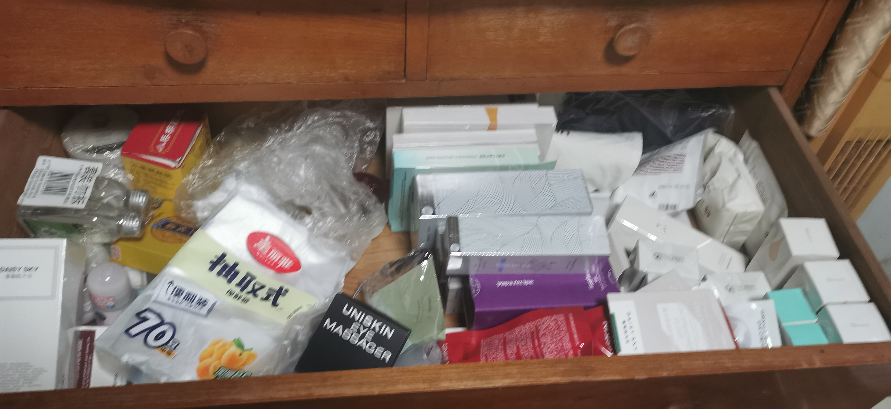
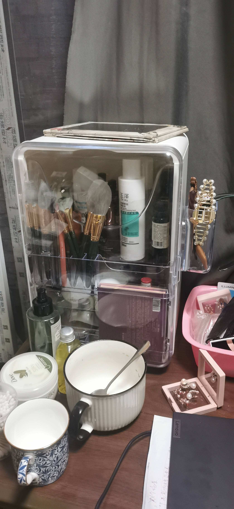

2022/11/08 10:00
今天是种子学演讲汇报的日子。很难想象自己可以站在讲台上被Ta注目，也可能是内心深处的害怕作祟，PPt制作的任务便落在我的头上。仍然不管用啊， 如此熟悉的声线我没法儿忘记，甚至难以抵抗一字一句，它们清清楚楚地窜入我的耳朵，我的心里。有那么一霎那脑海中冲动逃离507的念头漫无边际，或是妄想成为一个失聪者，至少至少可以屏蔽Ta的声音。早晚灭了你😕。
2022/11/08 10:00
今天是种子学演讲汇报的日子。很难想象自己可以站在讲台上被Ta注目，也可能是内心深处的害怕作祟，PPt制作的任务便落在我的头上。仍然不管用啊， 如此熟悉的声线我没法儿忘记，甚至难以抵抗一字一句，它们清清楚楚地窜入我的耳朵，我的心里。有那么一霎那脑海中冲动逃离507的念头漫无边际，或是妄想成为一个失聪者，至少至少可以屏蔽Ta的声音。早晚灭了你😕。
2022/11/10
消失不见的项目组长zy突然需要我提交一份关于项目的心得体会。那有什么心得哇，一次实验都没上手过，一次讨论也没参与过，可能人家不好意思喊我帮忙？？
网上的摘摘抄抄，搜刮出以下心得体会，供大家阅览。
关乎此次的大创课题，虽然我们做的不是什么伟大的工程，但对于我们一年来的劳动成果却依然有点大功告成的感觉，心里满是自豪和骄傲。这一路上很幸运有师兄师姐带领我们，帮助我们熟悉主要的实验流程和相关事宜，大大降低重复犯同样错误的几率，也避免了黑暗和痛苦的独孤求索的过程。尽管失败的时刻总会到来，不过好在大家一起相互积极地交流倒也没什么可以害怕的，因为交流是最好的老师。每当我们终于通过查阅文献、汲取别人的经验等方法找到实验失败的原因时，心中的激动与快乐不言而喻。在大家的共同合作下，我们先后优化了草甘膦降解菌Y16A最佳降解条件，确定降解草甘膦效果最佳的参数，也测定了其对草甘膦胁迫下水稻种子萌发、抗氧化系统等的影响。这一年的学习过程我受益颇多，不仅仅是学习上的，知识上的充实，更收获了科研道路上宝贵的经验。
总而言之，也许我们在学术上并没有多大的造诣，也没有多大的创新，不过这个项目很难得也很锻炼大家及时沟通、发现问题和解决问题的能力，对于草甘膦降解菌Y16A的降解特性以及其诱导水稻种子缓解草甘膦药害作用的研究我也有了一个完整的了解，大大提升了我的知识储备、文献储备和方法储备，整个过程是十分的充实、大有裨益。
我还提前祝福他单身节快乐，然后被骂了。
2022/11/11 22:02
处理人际关系真不是我的强项，但愿它只有1+1这么简单。
2022/11/12 18:56
今天脑子唰的一下想通了，恍如大悟。一直以来我认为我是受害者，其实并不然，自己才是那个决定中断关系的幕后黑手。看完下面的一段话大家能否真实告诉我你们的感觉是什么吗？
1.姐姐在群里发的照片并说这是女生的化妆品和护肤品柜：

2.妈妈回复：太多了，清理干净，不要的扔掉。紧接着姐姐说都是新的，双11刚补的货。妈妈再复：用袋装好放在其他位置，东北方，北方，西方。姐姐又说：这就是北方啦。话题结束。
这段对话发生的那一刻，我终于明白为什么我会失去ta了。因为我很窒息，我已经厌烦甚至乎逃避似的继续在这样的聊天氛围中堆起笑脸的和他们聊天了。我不再喜欢和他分享，犹如我不再将开心的事告诉给妈妈；我说我不喜欢你的说话方式希望你能改一下，实际上是我不喜欢妈妈一直以来否定的话语和打压方式，但是我能让妈妈改吗？不可能，所以我们两人也不可能了。
我很希望自己能像姐姐一样温柔的回答妈妈，奈何我一看见妈妈这样的回复心中的热情当堂被冷水浇灭，而且还升起一股无名之火想冲着她发泄。
到头来啊，性格上要改的人是自己，不是你呀，da哥。
2022/11/15 21:24
阿达，我不想思考明天会怎样，现在下雨了我打开伞就好。
2022/11/16 17:37
⏯
阿达，在我们一起之前，我曾已逛街的名义约林萍走过你高中三年重重复复经过的路。后来看电影的途中我终于忍不住，眼泪哗哗哗地往下巴流。因为我知道，你需要的是一个能陪你带着锋刃，勇往直前搏出一个未来。但你知道吗?我永远都成为不了这种人。
今天天气很好，我很好，祝你也是。
—————————————————————2022/11/17 13:51
哈哈又是我啦，今天又是探寻人际关系神秘面纱的一天，但是我是谁，我可是愈战愈勇的陸豆鲨诶（贱兮兮），我不会退缩的！。
2022/11/18 21:47
我讨厌这种不被尊重的感觉！！！